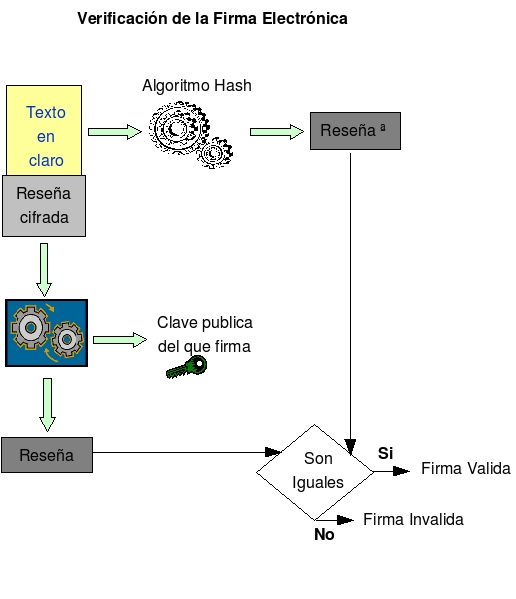

16.2.- Verificación de firma electrónica

Figura S5.2-1 Esquema, Verificación de la firma electrónica
El destinatario debe aplicar de nuevo la función hash al texto en claro y comparar su resultado (reseña) con el que ha recibido, que se tiene que descifrar usando la clave publica del firmante, si ambos son iguales, tiene la seguridad de que el texto no fue modificado una vez que fue firmado y que lo envió la persona dueña de la clave privada que firmo el texto. (Ver figura S5.2-1)